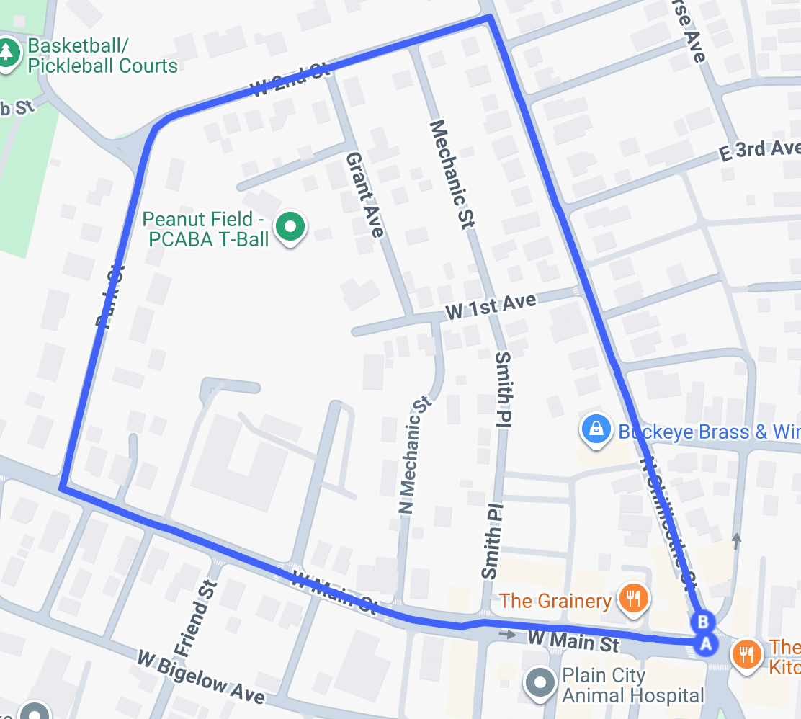

The Course
The race winds through the charming streets of historic downtown Plain City — one of Ohio's most picturesque small-town settings. The loop is approximately 0.9 miles, starting and finishing right in front of The Clock Tower Kitchen & Bar at 101 S Chillicothe St.
The race-to-zero format means the race clock runs for one full hour. Riders complete as many laps as possible within that time — if the clock hasn't reached zero when you finish a lap, you head out for another.
Faster riders stay to the outside of the course; slower riders keep to the inside. Always signal before passing and show respect to your fellow high-wheelers.

Key Dates
Check-in, safety briefing, and one hour of penny farthing racing through downtown Plain City. Followed by a post-race dinner at The Clock Tower and the Corn Carnival Parade.
Penny farthings on display during the Plain City Corn Carnival — part of the America 250 celebration.